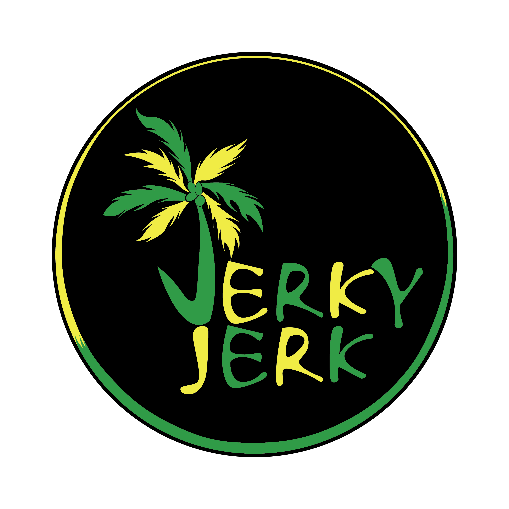
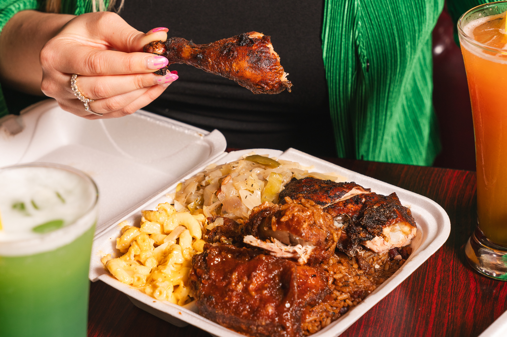
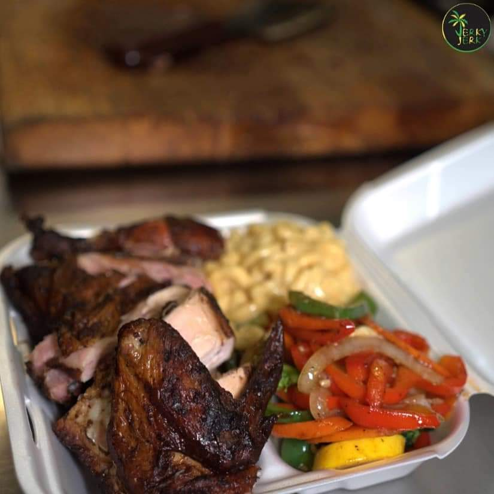
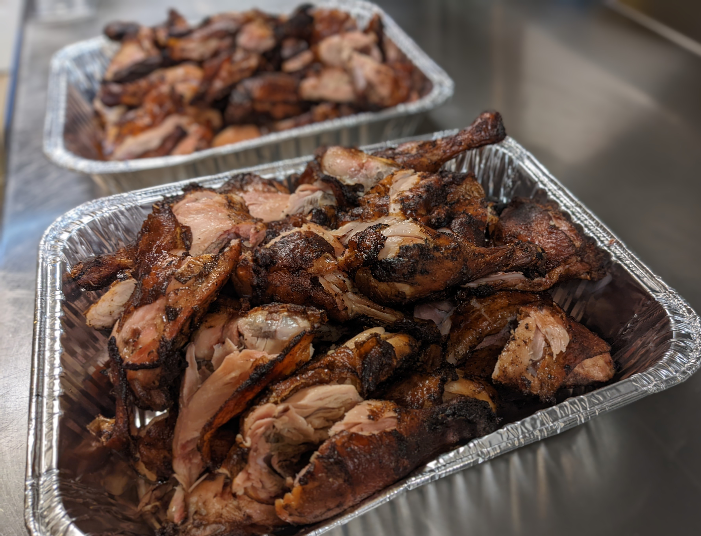
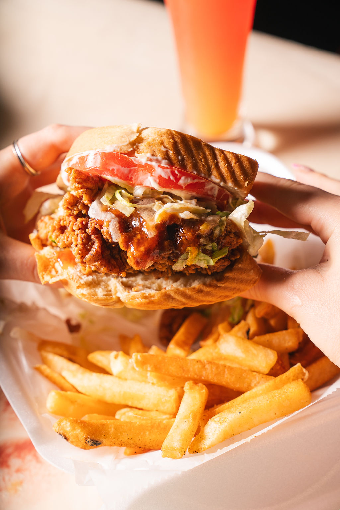
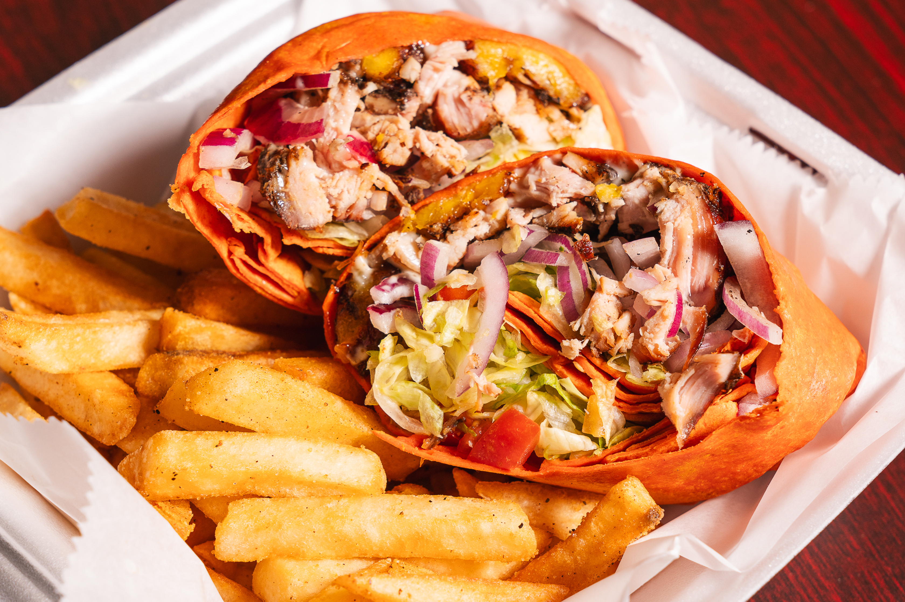
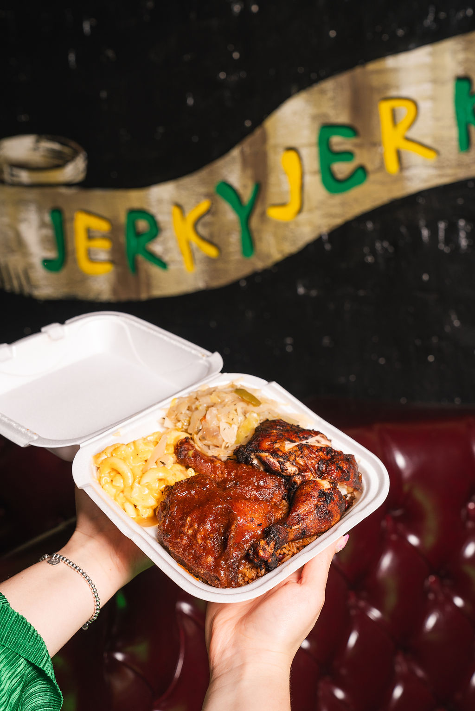

A Partnership Opportunity Built on 50+ Years of Family Restaurant Excellence
Russell, I am bringing you an opportunity that aligns directly with your vision for Milwaukee: creating jobs, supporting entrepreneurs, strengthening neighborhoods, and bringing authentic culture into the community. This is not a restaurant concept looking for a chance — it is a proven family business with decades of experience, culinary expertise, and a deep commitment to Milwaukee.
The opportunity unites the strength of Jerky Jerk (3 successful locations), Tropical Jerk 2, and Tropic Island Jerk Chicken (2 locations) into a premier Jamaican destination. We are not asking for a favor — we are asking for a partnership.
Since the 1970s, our family has owned and operated acclaimed Jamaican restaurants in Chicago, IL. We’ve built a legacy of authentic recipes, warm hospitality, and business resilience across generations.
Family members studied the restaurant business, and our executive chefs gained professional experience working in renowned Jamaican hotels. This unique mix delivers island authenticity with world-class operational discipline.
From grandmother’s recipes to modern restaurant systems, our family stays hands-on. We don’t franchise — we build community through every plate of jerk chicken, oxtail, and curry goat.






Russell, you are not simply evaluating another restaurant proposal. You personally understand the difference between Jamaican food that is simply “prepared” and food that carries the spirit of the island — the balance of pimento, the fire of scotch bonnet, the tradition of slow-grilled jerk over pimento wood. Because you know this culture, you know authenticity matters. District 15 deserves an anchor that reflects diversity, entrepreneurship, and culinary integrity. With your guidance, we will create a space that educates, celebrates, and brings people together — a restaurant that Milwaukeeans will be proud to claim.
Community anchor • neighborhood investment • cultural destination
Three established locations in Chicago with a cult following for charcoal-grilled jerk, oxtail, and authentic sides. The gold standard for Caribbean flavor.
A continuation of our family tradition, blending modern hospitality with traditional Jamaican pit-style cooking. Known for hospitality and bold spice blends.
Two successful locations representing decades of Jamaican culinary heritage. Our recipes have been celebrated across diverse neighborhoods.
We are not looking to simply open another restaurant. We are looking to plant roots. We intend this to become an institution that Milwaukee residents embrace, visitors seek out, and future generations inherit.
We are asking for your partnership, wisdom, and guidance in identifying the ideal location and connecting us with resources to make this vision a success for District 15.
We bring the experience, the financing, the culinary legacy — you bring the local leadership that makes transformative projects happen.
Russell, your personal connection to Jamaican food and culture is exactly why this partnership would resonate so authentically. You know the smell of pimento wood, the satisfaction of proper jerk, and the importance of preserving tradition while building generational wealth. Let’s build this together.
A partnership between proven entrepreneurs, community leadership, and Milwaukee’s vibrant future. We are ready to invest, create jobs, and celebrate Jamaican heritage in District 15.
Schedule a conversation →